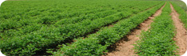

Welcome to Cultivation TemplateAgriculture is the production of food and goods through farming. Agriculture was the key development that led to the rise of human civilization, with the husbandry of domesticated animals and plants (i.e. crops) creating food surpluses that enabled the development of more densely populated and stratified societies. This is Free Cultivation template for your website design which is under Agriculture category you can add. You can customize the layout of the html page any way you like. |
Latest News
Jan 1, 2010
This cultivation web design layouts are built using XHTML and CSS. Get your dream web page html layout at no cost, no extra manpower for your professional website. Feb 10, 2010We provide you with professionally designed layouts to make your cultivation company deserves no less in the internet market. |